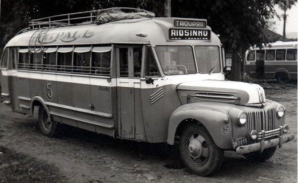

Desde os primórdios da sociedade, a luta das mulheres por reconhecimento e direitos tem sido marcada por desafios e avanços.
Inspiradas por figuras históricas como Rosa Parks, que desafiou a segregação racial nos Estados Unidos, e Simone de Beauvoir, cujas obras filosóficas questionaram os papéis tradicionais de gênero, as mulheres têm conquistado espaços em diferentes esferas da vida pública e privada.
Neste contexto, observa-se que, nas últimas décadas, as conquistas femininas se multiplicaram, abrangendo desde direitos políticos, como o voto e a participação na política, até avanços no mercado de trabalho, educação e na ciência.
Hoje, o cenário reflete um caminho de perseverança e resiliência que redefine constantemente o papel da mulher na sociedade contemporânea.
Por muito tempo, muito tempo mesmo, ser mulher era sinônimo de não ter direitos. Elas não podiam estudar, trabalhar, votar ou se interessar por qualquer assunto que não fosse cuidar de filhos e fazer enxoval. Só para você ter ideia, na Idade Média, muitos homens removiam o próprio testículo esquerdo, na certeza de que apenas o direito produzia espermatozoides capazes de gerar um filho homem.
Felizmente, algumas coisas já mudaram nesse sentido na maior parte do mundo, por mais que muitas mulheres ainda sejam reprimidas e violentadas apenas por causa de seu gênero. A seguir, conheça uma lista de grandes mulheres que deixaram importantes contribuições sociais, culturais e científicas à humanidade.
Margaret Heafield
Uma pesquisa ou investigação é um processo sistemático para a construção do conhecimento humano, gerando novos conhecimentos, podendo também desenvolver, colaborar, reproduzir, refutar, ampliar, detalhar, atualizar, algum conhecimento preexistente, servindo basicamente tanto para o indivíduo ou grupo de indivíduos que a realiza quanto para a sociedade na qual esta se desenvolve.
Além disso, contribuiu em diversos outros projetos importantes e publicou mais de 100 artigos sobre suas pesquisas. Em uma época na qual o termo "engenharia de software" ainda não existia, ela foi a primeira a se referir dessa forma ao trabalho que realizava. Em 2016 recebeu a Medalha Presidencial da Liberdade das mãos de Barack Obama como homenagem ao trabalho realizado na NASA.
Nascida em Paoli, no estado de Indiana (EUA) no dia 17 de agosto de 1936, Margaret se formou no ensino médio em 1954 na Hancock High School.
Se dedicou ao estudo da matemática na Universidade de Michigan.e se formou na Earlham College em 1958. Sua pós-graduação foi em meteorologia no Instituto de Tecnologia de Massachusetts (MIT).
Foi professora de matemática no ensino médio e em 1960 passou a trabalhar no MIT como desenvolvedora de programas meteorológicos.
A alunissagem ("aterrissagem" em solo lunar) teve complicações que só foram solucionadas devido ao excelente programa desenvolvido por Margaret Hamilton. Faltando pouco tempo para o pouso, alarmes dispararam e o sistema ficou sobrecarregado, mas como havia sido elaborado para realizar as atividades mais importantes, seguiu normalmente o plano e permitiu que a missão não fosse abortada.
Rosa Parks
Rosa Parks foi uma cidadã norte-americana que marcou a sociedade na década de 1950 como um símbolo da resistência contra o racismo. Ela ficou famosa por realizar um ato de desobediência civil quando se recusou a ceder seu assento a um homem branco em um público, no Alabama
Rosa Louise McCauley Parks nasceu em Tuskegee, no Alabama, sul dos Estados Unidos. Seu pai era um carpinteiro chamado James McCauley, e sua mãe era uma professora chamada Leona Edwards. Ainda na infância, Rosa Parks e sua mãe passaram a viver na região metropolitana de Montgomery, capital do Alabama.
A segregação racial foi uma constante sua vida, e, desde criança, ela teve que lidar com isso. Na sua fase escolar, ela ia para o colégio a pé, uma vez que os ônibus escolares eram exclusivos para alunos brancos. Essa foi uma das primeiras de muitas experiências negativas que a segregação racial proporcionou-lhe ao longo de sua vida.
Rosa Parks ganhou projeção nacional nos Estados Unidos quando, em 1º de dezembro, recusou-se a obedecer a uma lei segregacionista local. O sul dos Estados Unidos era marcado por vasta legislação segregacionista, e, em Montgomery, existia uma lei que determinava que os negros deveriam sentar-se no fundo dos ônibus. Caso o ônibus ficasse cheio, os passageiros negros eram obrigados a cederem seu lugar para os brancos.
Nesse dia, Rosa Parks voltava de seu trabalho (ela era costureira na época), e, assim como qualquer cidadão branco, pagou por sua passagem. Em dado momento, o motorista do ônibus, seguindo a lei local, ordenou que ela e outros negros cedessem seus lugares. Todos se levantaram, mas ela não.
O motorista chamou a polícia, e Rosa Parks foi presa por desobedecer à lei local. A notícia da sua prisão espalhou-se, e a população negra de Montgomery uniu-se a fim de boicotar o sistema de ônibus da cidade como forma de protesto. O movimento pelos direitos civis dos negros nos Estados Unidos nascia, nesse momento, de um ato de desobediência civil.

Harriet Tubman
Harriet Tubman foi uma mulher afro-americana que nasceu como escravizada, mas conquistou sua liberdade fugindo do cativeiro. Ela dedicou sua vida ao combate da escravidão, palestrando em associações abolicionistas e ajudando escravizados a fugirem do sul dos Estados Unidos por meio de rotas de fuga. Ela também teve papel de destaque na Guerra Civil Americana.
O nome de nascimento de Tubman era Araminta Ross, sendo muito conhecida na sua infância como Minty. Harriet foi a quinta criança de um total de nove que o casal Harriet Green (sua mãe) e Benjamin Ross (seu pai) tiveram juntos. Como os pais de Tubman eram escravos, logo ela também começou a realizar os primeiros trabalhos sob a mesma condição.
Entre 1844 e 1845, Tubman casou-se com John Tubman, um negro livre. Logo após o seu casamento, ela oficializou sua mudança de nome , abandonando o Araminta e adotando o Harriet, mesmo nome de sua mãe, e com isso ela passou a se chamar Harriet Tubman. Especula-se que a mudança de nome já era parte de uma estratégia dela para uma possível fuga. Outros historiadores sugerem que foi apenas uma forma de homenagear a sua mãe.
Tubman decidiu que deveria fugir do domínio dos Brodess depois que seu dono começou a manifestar intenções de vendê-la. Essas intenções foram reforçadas quando Edward Brodess morreu, e, temendo que sua família fosse separada e que ela e seus parentes fossem enviados para o sul dos Estados Unidos, Tubman optou pela fuga.
Uma vez em liberdade, Tubman começou a trabalhar cuidando da casa de pessoas. Além disso, ela se engajou na luta para garantir que outros negros escravizados conseguissem a sua liberdade, e tornou-se uma das melhores guias na rede da Undergroud Railroad. Por meio da qual, Tubman conseguiu resgatar sua família e levá-la, em segurança, para o Canadá.
Ela também atuou em dezenas de outras missões ao longo da década de 1850. Em suas expedições, Tubman costumava levar soníferos para usar nas crianças, caso elas começassem a chorar, e tinha um rifle, usado para ameaçar aqueles que resolviam abandonar a expedição e retornar à escravidão. Isso era uma medida de segurança, pois aqueles que abandonavam o grupo poderiam colocar em risco todos os outros que estavam em fuga.
Malala Yousafzai
Malala Yousafzai é uma ativista paquistanesa internacionalmente conhecida por defender o direito das mulheres de estudarem. Ela ganhou notoriedade por ter defendido essa causa no Vale de Swat, região dominada pelo Talibã. Em 2012, sobreviveu a um atentado promovido por essa organização fundamentalista, e atualmente vive na Inglaterra.
Malala Yousafzai nasceu no dia 12 de julho de 1997, em Mingora, cidade que faz parte do Vale de Swat, na província de Khyber Pakhtunkhwa, no Paquistão. Por nacionalidade, Malala é paquistanesa, mas ela pertence à etnia pachto, um grupo minoritário no Paquistão. Os pachto se espalham pelos territórios do Paquistão e Afeganistão.
Ela era filha de Ziauddin Yousafzai e Tor Pekai Yousafzai. O sustento da família vinha das escolas que seu pai havia fundado em Mingora, mas, de toda forma, a família tinha uma vida muito simples. A própria Malala conta que, quando ela nasceu, na casa de seus pais não havia cozinha nem banheiro.
O avanço do Talibã pelo Vale do Swat logo colocou a vida de Malala e sua família em risco. O seu pai, dono de uma escola que aceitava meninas, e por isso mesmo, foi ameaçado. Malala continuou a estudar, e essa ação seria considerada um desafio direto às ordens dessa organização fundamentalista, caso fosse descoberta.
Talibã promoveu a destruição escolas que aceitassem meninas. Depois disso, atentados à bomba tornaram-se comuns, inclusive na cidade que ela morava, Mingora. Por meio da ação do Talibã, mais de 400 escolas foram destruídas no Swat, e, no final de 2008, o grupo extremista anunciou que as instituições femininas deveriam ser fechadas até janeiro de 2009.
A guerra do Talibã contra o governo paquistanês fez com que a família de Malala abandonasse o Vale de Swat. Ao retornar ao vale, Malala e seu pai se engajaram na militância pelo direito das mulheres de estudarem. Malala passou a ser procurada por veículos imprensa internacionais para dar entrevistas sobre sua militância. No final de 2009, foi revelado também que ela era a autora dos textos anônimos na BBC. Sua luta a tornou conhecida e aumentou os riscos contra ela e sua família. Ameças de morte tornaram-se comuns, e Malala passou a preocupar-se constantemente com a sua segurança e a de sua família. Assim, ela retornava para casa de ônibus, em vez de fazer o caminho a pé, e se certificava sempre de que as portas de sua casa estavam trancadas.
Apesar das precauções, o pior O Talibã decidiu promover um atentado contra a vida da estudante em represália às constantes críticas que ela fazia a essa organização fundamentalista. No dia 9 de outubro de 2012, o ônibus em que Malala estava foi parado por membros do Talibã, e três tiros foram disparados contra ela.
O atentado contra a vida de Malala teve repercussão internacional, e, alguns dias depois da cirurgia, ela foi transferida para Birmingham, na Inglaterra, para receber o melhor tratamento possível até sua recuperação completa. Como sequelas do atentado, Malala teve um dano em um nervo facial, que fez com que a parte esquerda do seu rosto ficasse levemente paralisada, e também teve danos em um dos tímpanos. O papel de Malala na defesa do direito das mulheres de estudarem a comoção internacional causada pelo atentado que ela sofreu fizeram com que a Organização das Nações Unidas (ONU) estabelecesse o dia 12 de julho como Dia de Malala, data utilizada para reforçar à comunidade internacional a importância do acesso das mulheres à educação.
ós recuperar-se, Malala criou o Fundo Malala, cujo objetivo é arrecadar dinheiro para ajudar mulheres a continuarem seus estudos em diferentes partes do planeta. O Fundo desenvolve ações em diversos países, inclusive no Brasil. O reconhecimento do seu trabalho fez com que ela fosse indicada a diversos prêmios, tanto no Paquistão quando no exterior. Malala foi vencedora de alguns deles, sendo o principal o Prêmio Nobel da Paz, conquistado em 2014.
Chegamos ao fim da página!
Agradecemos por sua dedicação em conhecer a história de todas essas mulheres de grande importancia.